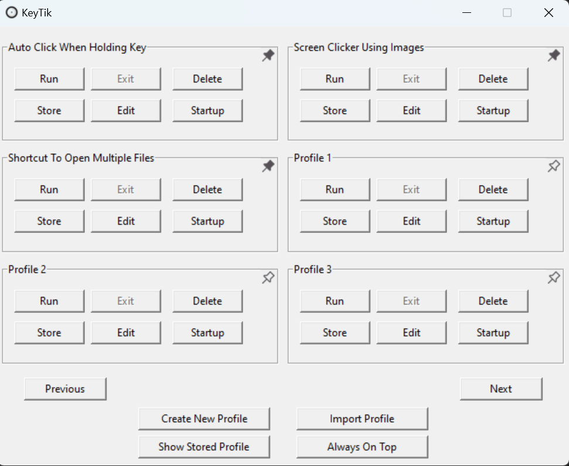

Preview



KeyTik is an open-source automation tool that can do almost all automation at your will. With AutoHotkey as scripting language, you can remap keys, create automation scripts, and more.
Sincerely, Fajar Rahmad Jaya

Available on various platforms:
Follow these steps to install KeyTik:
KeyTik comes with an integrated Auto Clicker. By default, holding the e key activates the Auto Clicker. You can customize the key and other settings as you like.
Activate or deactivate remap profiles based on different conditions like games, work, etc.
Use this feature to keep KeyTik always on top for easy access during gaming or other tasks.
KeyTik is open-source, so you can be sure there are no hidden viruses. You can scan it using VirusTotal for further peace of mind.
If you have any suggestions for KeyTik, please submit them on the GitHub Issues page.